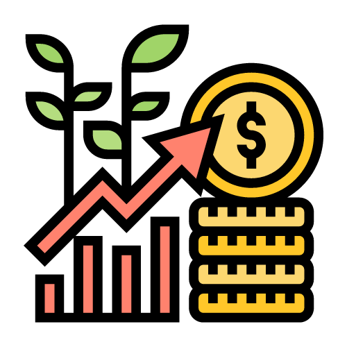

How do stocks generate income?
Capital Appreciation
Increase over time
If the stock's market price rises from the price at which you purchased it, you can sell the stock at a higher price and make a profit.

Dividends
Share in profits
Some companies distribute a portion of their profits to shareholders in the form of dividends. Dividends are typically paid out on a regular basis, such as quarterly or annually